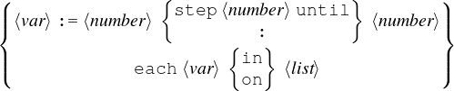

| Up | Next | Prev | PrevTail | Tail |
The for statement is used to define a variety of program loops. Its general syntax is as follows:
|
for  ⟨action⟩ ⟨exprn⟩ |
where
The assignment form of the for statement defines an iteration over the indicated numerical range. If expressions that do not evaluate to numbers are used in the designated places, an error will result.
The for each form of the for statement is designed to iterate down a list. Again, an error will occur if a list is not used.
The action do means that ⟨exprn⟩ is simply evaluated and no value kept; the statement returning 0 in this case (or no value at the top level). collect means that the results of evaluating ⟨exprn⟩ each time are linked together to make a list, and join means that the values of ⟨exprn⟩ are themselves lists that are joined to make one list (similar to conc in Lisp). Finally, product and sum form the respective combined value out of the values of ⟨exprn⟩.
In all cases, ⟨exprn⟩ is evaluated algebraically within the scope of the current value of ⟨var⟩. If ⟨action⟩ is do, then nothing else happens. In other cases, ⟨action⟩ is a binary operator that causes a result to be built up and returned by for. In those cases, the loop is initialized to a default value (0 for sum1 for product, and an empty list for the other actions). The test for the end condition is made before any action is taken. As in Pascal, if the variable is out of range in the assignment case, or the ⟨list⟩ is empty in the for each case, ⟨exprn⟩ is not evaluated at all.
Examples:
may be abbreviated to a colon. Thus, instead of the above we could write:
The control variable used in the for statement is actually a new variable, not related to the variable of the same name outside the for statement. In other words, executing a statement for i:=…doesn’t change the system’s assumption that i2 = −1. Furthermore, in algebraic mode, the value of the control variable is substituted in ⟨exprn⟩ only if it occurs explicitly in that expression. It will not replace a variable of the same name in the value of that expression. For example:
prints A twice, not 1 followed by 2.
| Up | Next | Prev | PrevTail | Front |